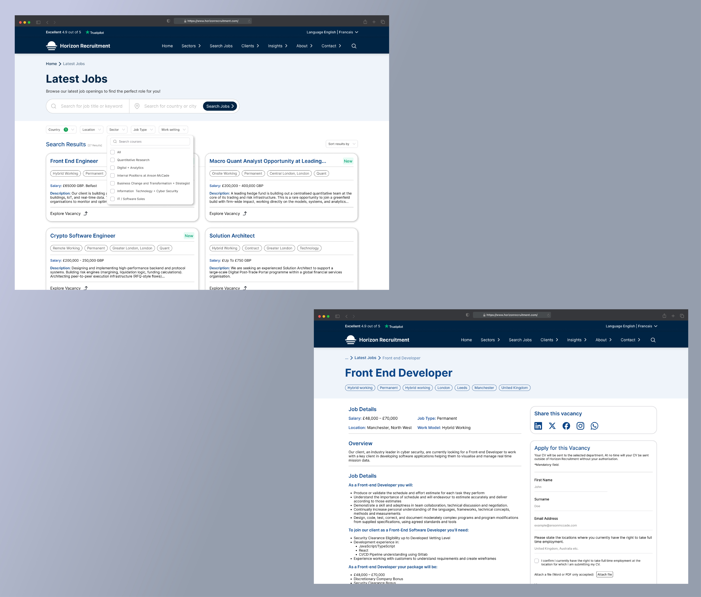
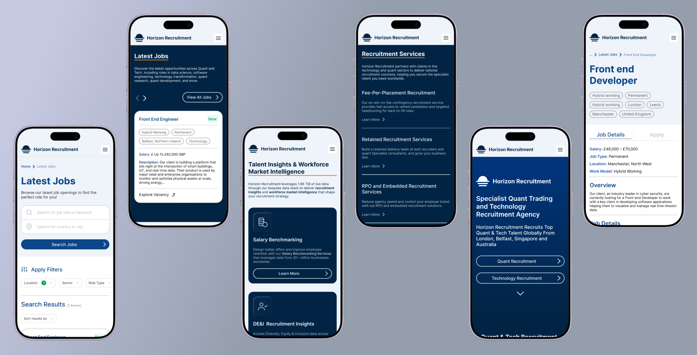

← Back to home
Horizon Recruitment
Date: 2026 • Disclaimer: This project is subject to Non Disclosure Agreements so client branding, sensitive information and other identifying details have been redacted.

The Challenge
The client required a complete website redesign to modernise their digital presence and improve the overall user experience. The project focused on simplifying key user journeys, reducing friction, and creating a more intuitive experience that aligned with user needs.
As the lead designer on the project, I was involved from discovery through to delivery. I conducted user research and competitor analysis, facilitated stakeholder collaboration, and translated insights into user flows, wireframes, and high-fidelity prototypes in Figma. To validate interactions and demonstrate functionality, I also developed interactive prototypes using HTML and CSS along with Copilot CLI.
Home Screen
The updated landing page features clean visual hierarchy, clear value propositions, and direct navigation paths to instantly engage candidates and employers alike.

Job Search
Streamlined search tools and intuitive filtering options reduce user effort, helping job seekers quickly pinpoint relevant postings with minimal friction.

Mobile View
Designed with a responsive-first approach, the mobile layout optimizes touch interactions and navigation for on-the-go browsing on smaller devices.

Proof of Concept prototype
To align with the client’s tech-focused recruitment strategy and desire for dynamic movement, I created interactive node graphics using Adobe Illustrator. By organizing elements into precise SVG groups, I leveraged Copilot CLI to program mouse interactions, building a functional prototype with HTML and CSS to validate key UI behaviors and demonstrate live functionality prior to deployment.